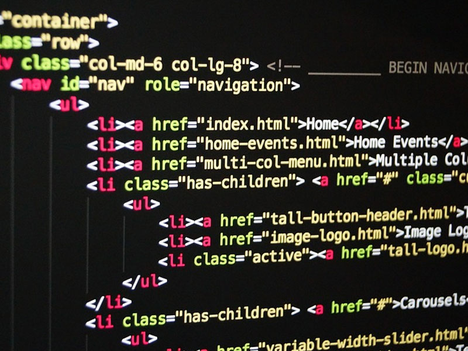

ซอฟต์แวร์ (Software) คืออะไร
ซอฟต์แวร์ (Software) คือ โปรแกรมหรือชุดคำสั่งที่ใช้สั่งงานเครื่องคอมพิวเตอร์ หรืออุปกรณ์อิเล็กทรอนิกส์อื่น ๆ ให้ทำงาน เปรียบเสมือนตัวกลางที่นำพา user ให้เข้าไปถึงในระบบต่าง ๆ ที่หลากหลาย ซอฟต์แวร์จึงเป็นส่วนสำคัญที่ควบคุมคอมพิวเตอร์ให้สามารถดำเนินการไปตามคำสั่งที่กำหนดไว้ล่วงหน้าได้
ที่มาของคำว่า “ ซอฟต์แวร์ ”
คำว่า Software (ซอฟต์แวร์) นั้นเป็นการสร้างคำใหม่จากคำว่า Hardware (ฮาร์ดแวร์) เกิดขึ้นครั้งแรกโดย John W. Turkey ในปี ค.ศ.1957 ที่เสนอให้คำว่า “ Software ” นั้นใช้สำหรับอธิบายส่วนที่ไม่สามารถจับต้องได้ ที่สั่งการให้คอมพิวเตอร์ทำงาน
ซอฟต์แวร์ แบ่งออกเป็นกี่ประเภท อะไรบ้าง
โปรแกรมที่ทำมาใช้งานกับคอมพิวเตอร์นั้นมีมากมายเกินจะนับไหว ทำให้ต้องมีการแบ่งประเภทของซอฟต์แวร์ตามหน้าที่การทำงาน ออกมาได้ 2 ประเภทหลัก ดังต่อไปนี้
1.ซอฟต์แวร์ระบบ (System Software)
“ซอฟต์แวร์ระบบ” ซอฟต์แวร์คอมพิวเตอร์ที่ออกแบบมาเพื่อใช้สำหรับควบคุมและจัดการกับฮาร์ดแวร์ (Hardware) ด้วยการจัดสรรทรัพยากรของคอมพิวเตอร์ ไม่ว่าจะเป็นหน่วยประมวลผล (CPU) หน่วยความจำ อุปกรณ์เชื่อมต่อ และอุปกรณ์เก็บข้อมูล เพื่อให้ซอฟต์แวร์ประยุกต์ทำงานได้ดีบนคอมพิวเตอร์ สามารถแบ่งประเภทหลัก ๆ ออกมาได้ตามต่อไปนี้
- ระบบปฏิบัติการ (Operating System)
- ตัวแปลภาษา (Language Translator)
- โปรแกรมอรรถประโยชน์ (Utility Program)
ซอฟต์แวร์ระบบสำคัญ ที่ทำหน้าที่ควบคุมการทำงานของฮาร์ดแวร์ทั้งหมดบนคอมพิวเตอร์ และรวมถึงซอฟต์แวร์ประยุกต์บางโปรแกรม เปรียบเสมือนตัวกลางที่ให้ user สามารถสั่งการคอมพิวเตอร์ผ่านระบบปฏิบัติการได้ เช่น การสั่งให้เปิดโปรแกรมกับการปิดเครื่อง ส่วนของระบบปฏิบัติการที่อาจรู้จักกันดีหรือเคยผ่านตากันมาบ้าง ได้แก่ Windows , Linux , MacOS รวมถึง iOS และ Android ด้วยครับ
ซอฟต์แวร์ที่ใช้สำหรับแปลภาษาโปรแกรมระดับสูง เช่นภาษา C , Java หรือ Python ให้เป็นภาษาที่คอมพิวเตอร์สามารถเข้าใจและประมวลผลได้
ที่ใช้สำหรับช่วยให้การทำงานของระบบปฏิบัติการมีประสิทธิภาพมากขึ้น หรือให้ความสะดวกแก่ผู้ใช้ ตัวอย่างเช่น โปรแกรมบีบอัดไฟล์ โปรแกรมป้องกันไวรัส โปรแกรมสำรองข้อมูล โปรแกรมค้นหาไฟล์ และอื่น ๆ
2.ซอฟต์แวร์ประยุกต์ (Application Software)
“ซอฟต์แวร์ประยุกต์” ชนิดนึงของซอฟต์แวร์ ที่ออกแบบมาเพื่อใช้งานเฉพาะด้านใดด้านนึงตามความต้องการของผู้ใช้ ไม่เกี่ยวข้องกับหน้าที่ควบคุมระบบคอมพิวเตอร์ แต่จะอาศัยซอฟต์แวร์ระบบ (System Software) เป็นพื้นฐานให้สามารถทำงานได้อย่างมีประสิทธิภาพ ตัวอย่างเช่น โปรแกรมสำนักงาน ฐานข้อมูล เกม หรือโปรแกรมตัดต่อภาพ เป็นต้น เหล่านี้ล้วนถือว่าเป็นโปรแกรมประยุกต์นั่นเอง สามารถแบ่งออกได้เป็น 2 ประเภทหลัก ดังต่อไปนี้
- ซอฟต์แวร์สำเร็จรูป (Packaged Software)
- ซอฟต์แวร์ใช้งานเฉพาะ (Custom Software)
เป็นซอฟต์แวร์ที่บริษัทเหล่านี้ได้สร้างขึ้นและวางขายทั่วไป สามารถนำมาประยุกต์ใช้งานทั่วไปได้ แต่จะไม่ได้เน้นสำหรับงานใดงานหนึ่ง เช่น โปรแกรมประมวลคำ โปรแกรมนำเสนอ หรือโปรแกรมเล่นวิดีโอ
เป็นโปรแกรมที่ออกแบบและพัฒนาเพื่อใช้สำหรับงานเฉพาะด้านตามความต้องการ มักจะเป็นการจ้างบริษัท Software House หรือนักพัฒนาซอฟต์แวร์โดยตรง เพื่อผลิตซอฟต์แวร์ที่เหมาะสมให้กับธุรกิจหรือองค์กร
